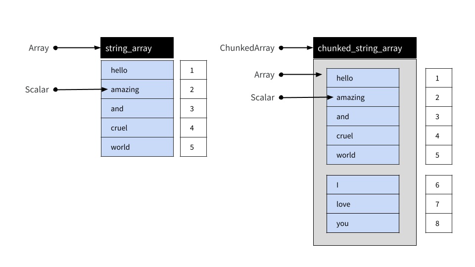
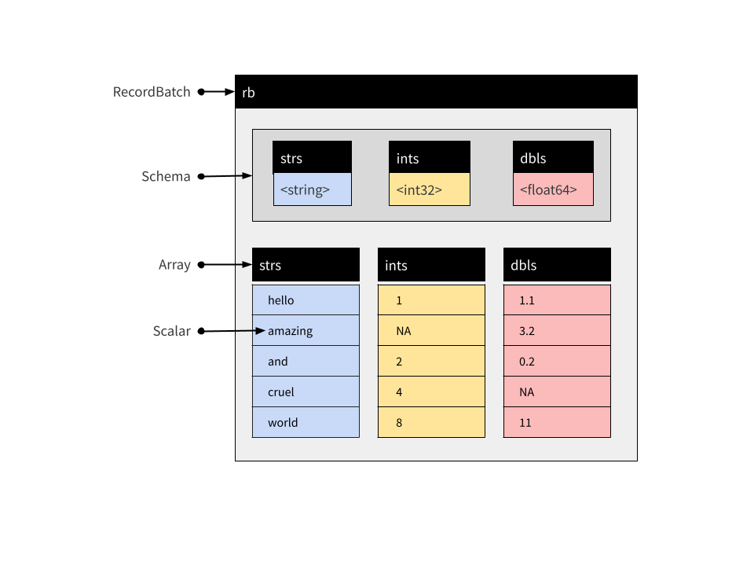
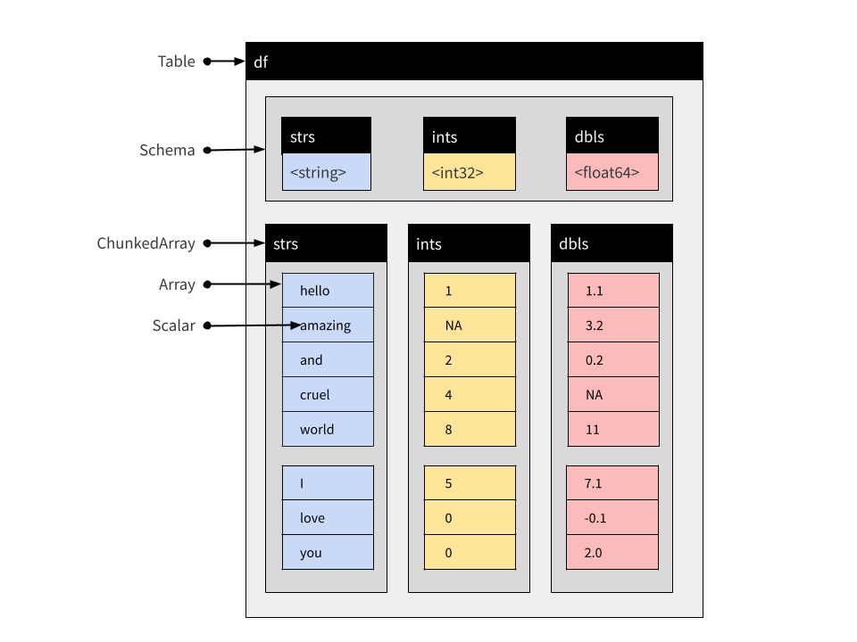

This article describes the various data object types supplied by arrow, and documents how these objects are structured.
The arrow package supplies several object classes that are used to
represent data. RecordBatch, Table, and
Dataset objects are two-dimensional rectangular data
structures used to store tabular data. For columnar, one-dimensional
data, the Array and ChunkedArray classes are
provided. Finally, Scalar objects represent individual
values. The table below summarizes these objects and shows how you can
create new instances using the R6 class object, as well
as convenience functions that provide the same functionality in a more
traditional R-like fashion:
| Dim | Class | How to create an instance | Convenience function |
|---|---|---|---|
| 0 | Scalar |
Scalar$create(value, type) |
|
| 1 | Array |
Array$create(vector, type) |
as_arrow_array(x) |
| 1 | ChunkedArray |
ChunkedArray$create(..., type) |
chunked_array(..., type) |
| 2 | RecordBatch |
RecordBatch$create(...) |
record_batch(...) |
| 2 | Table |
Table$create(...) |
arrow_table(...) |
| 2 | Dataset |
Dataset$create(sources, schema) |
open_dataset(sources, schema) |
Later in the article we’ll look at each of these in more detail. For now we note that each of these object classes corresponds to a class of the same name in the underlying Arrow C++ library.
In addition to these data objects, arrow defines the following classes for representing metadata:
- A
Schemais a list ofFieldobjects used to describe the structure of a tabular data object; where - A
Fieldspecifies a character string name and aDataType; and - A
DataTypeis an attribute controlling how values are represented
These metadata objects play an important role in making sure data are represented correctly, and all three of the tabular data object types (Record Batch, Table, and Dataset) include explicit Schema objects used to represent metadata. To learn more about these metadata classes, see the metadata article.
Scalars
A Scalar object is simply a single value that can be of any type. It
might be an integer, a string, a timestamp, or any of the different
DataType objects that Arrow supports. Most users of the
arrow R package are unlikely to create Scalars directly, but should
there be a need you can do this by calling the
Scalar$create() method:
Scalar$create("hello")## Scalar
## helloArrays
Array objects are ordered sets of Scalar values. As with Scalars most
users will not need to create Arrays directly, but if the need arises
there is an Array$create() method that allows you to create
new Arrays:
integer_array <- Array$create(c(1L, NA, 2L, 4L, 8L))
integer_array## Array
## <int32>
## [
## 1,
## null,
## 2,
## 4,
## 8
## ]
string_array <- Array$create(c("hello", "amazing", "and", "cruel", "world"))
string_array## Array
## <string>
## [
## "hello",
## "amazing",
## "and",
## "cruel",
## "world"
## ]An Array can be subset using square brackets as shown below:
string_array[4:5]## Array
## <string>
## [
## "cruel",
## "world"
## ]Arrays are immutable objects: once an Array has been created it cannot be modified or extended.
Chunked Arrays
In practice, most users of the arrow R package are likely to use Chunked Arrays rather than simple Arrays. Under the hood, a Chunked Array is a collection of one or more Arrays that can be indexed as if they were a single Array. The reasons that Arrow provides this functionality are described in the data object layout article but for the present purposes it is sufficient to notice that Chunked Arrays behave like Arrays in regular data analysis.
To illustrate, let’s use the chunked_array()
function:
chunked_string_array <- chunked_array(
string_array,
c("I", "love", "you")
)The chunked_array() function is just a wrapper around
the functionality that ChunkedArray$create() provides.
Let’s print the object:
chunked_string_array## ChunkedArray
## <string>
## [
## [
## "hello",
## "amazing",
## "and",
## "cruel",
## "world"
## ],
## [
## "I",
## "love",
## "you"
## ]
## ]The double bracketing in this output is intended to highlight the fact that Chunked Arrays are wrappers around one or more Arrays. However, although comprised of multiple distinct Arrays, a Chunked Array can be indexed as if they were laid end-to-end in a single “vector-like” object. This is illustrated below:

We can use chunked_string_array to illustrate this:
chunked_string_array[4:7]## ChunkedArray
## <string>
## [
## [
## "cruel",
## "world"
## ],
## [
## "I",
## "love"
## ]
## ]An important thing to note is that “chunking” is not semantically
meaningful. It is an implementation detail only: users should never
treat the chunk as a meaningful unit. Writing the data to disk, for
example, often results in the data being organized into different
chunks. Similarly, two Chunked Arrays that contain the same values
assigned to different chunks are deemed equivalent. To illustrate this
we can create a Chunked Array that contains the same four same four
values as chunked_string_array[4:7], but organized into one
chunk rather than split into two:
cruel_world <- chunked_array(c("cruel", "world", "I", "love"))
cruel_world## ChunkedArray
## <string>
## [
## [
## "cruel",
## "world",
## "I",
## "love"
## ]
## ]Testing for equality using == produces an element-wise
comparison, and the result is a new Chunked Array of four (boolean type)
true values:
cruel_world == chunked_string_array[4:7]## ChunkedArray
## <bool>
## [
## [
## true,
## true,
## true,
## true
## ]
## ]In short, the intention is that users interact with Chunked Arrays as if they are ordinary one-dimensional data structures without ever having to think much about the underlying chunking arrangement.
Chunked Arrays are mutable, in a specific sense: Arrays can be added and removed from a Chunked Array.
Record Batches
A Record Batch is tabular data structure comprised of named Arrays, and an accompanying Schema that specifies the name and data type associated with each Array. Record Batches are a fundamental unit for data interchange in Arrow, but are not typically used for data analysis. Tables and Datasets are usually more convenient in analytic contexts.
These Arrays can be of different types but must all be the same
length. Each Array is referred to as one of the “fields” or “columns” of
the Record Batch. You can create a Record Batch using the
record_batch() function or by using the
RecordBatch$create() method. These functions are flexible
and can accept inputs in several formats: you can pass a data frame, one
or more named vectors, an input stream, or even a raw vector containing
appropriate binary data. For example:
rb <- record_batch(
strs = string_array,
ints = integer_array,
dbls = c(1.1, 3.2, 0.2, NA, 11)
)
rb## RecordBatch
## 5 rows x 3 columns
## $strs <string>
## $ints <int32>
## $dbls <double>This is a Record Batch containing 5 rows and 3 columns, and its conceptual structure is shown below:

The arrow package supplies a $ method for Record Batch
objects, used to extract a single column by name:
rb$strs## Array
## <string>
## [
## "hello",
## "amazing",
## "and",
## "cruel",
## "world"
## ]You can use double brackets [[ to refer to columns by
position. The rb$ints array is the second column in our
Record Batch so we can extract it with this:
rb[[2]]## Array
## <int32>
## [
## 1,
## null,
## 2,
## 4,
## 8
## ]There is also [ method that allows you to extract
subsets of a record batch in the same way you would for a data frame.
The command rb[1:3, 1:2] extracts the first three rows and
the first two columns:
rb[1:3, 1:2]## RecordBatch
## 3 rows x 2 columns
## $strs <string>
## $ints <int32>Record Batches cannot be concatenated: because they are comprised of Arrays, and Arrays are immutable objects, new rows cannot be added to Record Batch once created.
Tables
A Table is comprised of named Chunked Arrays, in the same way that a Record Batch is comprised of named Arrays. Like Record Batches, Tables include an explicit Schema specifying the name and data type for each Chunked Array.
You can subset Tables with $, [[, and
[ the same way you can for Record Batches. Unlike Record
Batches, Tables can be concatenated (because they are comprised of
Chunked Arrays). Suppose a second Record Batch arrives:
new_rb <- record_batch(
strs = c("I", "love", "you"),
ints = c(5L, 0L, 0L),
dbls = c(7.1, -0.1, 2)
)It is not possible to create a Record Batch that appends the data
from new_rb to the data in rb, not without
creating entirely new objects in memory. With Tables, however, we
can:
df <- arrow_table(rb)
new_df <- arrow_table(new_rb)We now have the two fragments of the data set represented as Tables. The difference between the Table and the Record Batch is that the columns are all represented as Chunked Arrays. Each Array from the original Record Batch is one chunk in the corresponding Chunked Array in the Table:
rb$strs## Array
## <string>
## [
## "hello",
## "amazing",
## "and",
## "cruel",
## "world"
## ]
df$strs## ChunkedArray
## <string>
## [
## [
## "hello",
## "amazing",
## "and",
## "cruel",
## "world"
## ]
## ]It’s the same underlying data – and indeed the same immutable Array is referenced by both – just enclosed by a new, flexible Chunked Array wrapper. However, it is this wrapper that allows us to concatenate Tables:
concat_tables(df, new_df)## Table
## 8 rows x 3 columns
## $strs <string>
## $ints <int32>
## $dbls <double>The resulting object is shown schematically below:

Notice that the Chunked Arrays within the new Table retain this chunking structure, because none of the original Arrays have been moved:
df_both <- concat_tables(df, new_df)
df_both$strs## ChunkedArray
## <string>
## [
## [
## "hello",
## "amazing",
## "and",
## "cruel",
## "world"
## ],
## [
## "I",
## "love",
## "you"
## ]
## ]Datasets
Like Record Batch and Table objects, a Dataset is used to represent tabular data. At an abstract level, a Dataset can be viewed as an object comprised of rows and columns, and just like Record Batches and Tables, it contains an explicit Schema that specifies the name and data type associated with each column.
However, where Tables and Record Batches are data explicitly represented in-memory, a Dataset is not. Instead, a Dataset is an abstraction that refers to data stored on-disk in one or more files. Values stored in the data files are loaded into memory as a batched process. Loading takes place only as needed, and only when a query is executed against the data. In this respect Arrow Datasets are a very different kind of object to Arrow Tables, but the dplyr commands used to analyze them are essentially identical. In this section we’ll talk about how Datasets are structured. If you want to learn more about the practical details of analyzing Datasets, see the article on analyzing multi-file datasets.
The on-disk data files
Reduced to its simplest form, the on-disk structure of a Dataset is
simply a collection of data files, each storing one subset of the data.
These subsets are sometimes referred to as “fragments”, and the
partitioning process is sometimes referred to as “sharding”. By
convention, these files are organized into a folder structure called a
Hive-style partition: see hive_partition() for details.
To illustrate how this works, let’s write a multi-file dataset to disk manually, without using any of the Arrow Dataset functionality to do the work. We’ll start with three small data frames, each of which contains one subset of the data we want to store:
df_a <- data.frame(id = 1:5, value = rnorm(5), subset = "a")
df_b <- data.frame(id = 6:10, value = rnorm(5), subset = "b")
df_c <- data.frame(id = 11:15, value = rnorm(5), subset = "c")Our intention is that each of the data frames should be stored in a
separate data file. As you can see, this is a quite structured
partitioning: all data where subset = "a" belong to one
file, all data where subset = "b" belong to another file,
and all data where subset = "c" belong to the third
file.
The first step is to define and create a folder that will hold all the files:
ds_dir <- "mini-dataset"
dir.create(ds_dir)The next step is to manually create the Hive-style folder structure:
ds_dir_a <- file.path(ds_dir, "subset=a")
ds_dir_b <- file.path(ds_dir, "subset=b")
ds_dir_c <- file.path(ds_dir, "subset=c")
dir.create(ds_dir_a)
dir.create(ds_dir_b)
dir.create(ds_dir_c)Notice that we have named each folder in a “key=value” format that exactly describes the subset of data that will be written into that folder. This naming structure is the essence of Hive-style partitions.
Now that we have the folders, we’ll use write_parquet()
to create a single parquet file for each of the three subsets:
write_parquet(df_a, file.path(ds_dir_a, "part-0.parquet"))
write_parquet(df_b, file.path(ds_dir_b, "part-0.parquet"))
write_parquet(df_c, file.path(ds_dir_c, "part-0.parquet"))If we had wanted to, we could have further subdivided the dataset. A
folder could contain multiple files (part-0.parquet,
part-1.parquet, etc) if we wanted it to. Similarly, there
is no particular reason to name the files part-0.parquet
this way at all: it would have been fine to call these files
subset-a.parquet, subset-b.parquet, and
subset-c.parquet if we had wished. We could have written
other file formats if we wanted, and we don’t necessarily have to use
Hive-style folders. You can learn more about the supported formats by
reading the help documentation for open_dataset(), and
learn about how to exercise fine-grained control with
help("Dataset", package = "arrow").
In any case, we have created an on-disk parquet Dataset using Hive-style partitioning. Our Dataset is defined by these files:
list.files(ds_dir, recursive = TRUE)## [1] "subset=a/part-0.parquet" "subset=b/part-0.parquet"
## [3] "subset=c/part-0.parquet"To verify that everything has worked, let’s open the data with
open_dataset() and call glimpse() to inspect
its contents:
ds <- open_dataset(ds_dir)
glimpse(ds)## FileSystemDataset with 3 Parquet files
## 15 rows x 3 columns
## $ id <int32> 1, 2, 3, 4, 5, 6, 7, 8, 9, 10, 11, 12, 13, 14, 15
## $ value <double> -1.400043517, 0.255317055, -2.437263611, -0.005571287, 0.62155…
## $ subset <string> "a", "a", "a", "a", "a", "b", "b", "b", "b", "b", "c", "c", "c…
## Call `print()` for full schema detailsAs you can see, the ds Dataset object aggregates the
three separate data files. In fact, in this particular case the Dataset
is so small that values from all three files appear in the output of
glimpse().
It should be noted that in everyday data analysis work, you wouldn’t need to do write the data files manually in this fashion. The example above is entirely for illustrative purposes. The exact same dataset could be created with the following command:
ds |>
group_by(subset) |>
write_dataset("mini-dataset")In fact, even if ds happens to refer to a data source
that is larger than memory, this command should still work because the
Dataset functionality is written to ensure that during a pipeline such
as this the data is loaded piecewise in order to avoid exhausting
memory.
The Dataset object
In the previous section we examined the on-disk structure of a
Dataset. We now turn to the in-memory structure of the Dataset object
itself (i.e., ds in the previous example). When the Dataset
object is created, arrow searches the dataset folder looking for
appropriate files, but does not load the contents of those files. Paths
to these files are stored in an active binding
ds$files:
ds$files## [1] "/home/bryce/Source/apache/arrow/r/vignettes/mini-dataset/subset=a/part-0.parquet"
## [2] "/home/bryce/Source/apache/arrow/r/vignettes/mini-dataset/subset=b/part-0.parquet"
## [3] "/home/bryce/Source/apache/arrow/r/vignettes/mini-dataset/subset=c/part-0.parquet"The other thing that happens when open_dataset() is
called is that an explicit Schema for the Dataset is constructed and
stored as ds$schema:
ds$schema## Schema
## id: int32
## value: double
## subset: string
##
## See $metadata for additional Schema metadataBy default this Schema is inferred by inspecting the first file only,
though it is possible to construct a unified schema after inspecting all
files. To do this, set unify_schemas = TRUE when calling
open_dataset(). It is also possible to use the
schema argument to open_dataset() to specify
the Schema explicitly (see the schema() function for
details).
The act of reading the data is performed by a Scanner object. When analyzing a Dataset using the dplyr interface you never need to construct a Scanner manually, but for explanatory purposes we’ll do it here:
scan <- Scanner$create(dataset = ds)Calling the ToTable() method will materialize the
Dataset (on-disk) as a Table (in-memory):
scan$ToTable()## Table
## 15 rows x 3 columns
## $id <int32>
## $value <double>
## $subset <string>
##
## See $metadata for additional Schema metadataThis scanning process is multi-threaded by default, but if necessary
threading can be disabled by setting use_threads = FALSE
when calling Scanner$create().
Querying a Dataset
When a query is executed against a Dataset a new scan is initiated and the results pulled back into R. As an example, consider the following dplyr expression:
ds |>
filter(value > 0) |>
mutate(new_value = round(100 * value)) |>
select(id, subset, new_value) |>
collect()## # A tibble: 6 × 3
## id subset new_value
## <int> <chr> <dbl>
## 1 2 a 26
## 2 5 a 62
## 3 6 b 115
## 4 12 c 63
## 5 13 c 207
## 6 15 c 51We can replicate this using the low-level Dataset interface by
creating a new scan by specifying the filter and
projection arguments to Scanner$create(). To
use these arguments you need to know a little about Arrow Expressions,
for which you may find it helpful to read the help documentation in
help("Expression", package = "arrow").
The scanner defined below mimics the dplyr pipeline shown above,
scan <- Scanner$create(
dataset = ds,
filter = Expression$field_ref("value") > 0,
projection = list(
id = Expression$field_ref("id"),
subset = Expression$field_ref("subset"),
new_value = Expression$create("round", 100 * Expression$field_ref("value"))
)
)and if we were to call as.data.frame(scan$ToTable()) it
would produce the same result as the dplyr version, though the rows may
not appear in the same order.
To get a better sense of what happens when the query executes, what
we’ll do here is call scan$ScanBatches(). Much like the
ToTable() method, the ScanBatches() method
executes the query separately against each of the files, but it returns
a list of Record Batches, one for each file. In addition, we’ll convert
these Record Batches to data frames individually:
lapply(scan$ScanBatches(), as.data.frame)## [[1]]
## id subset new_value
## 1 2 a 26
## 2 5 a 62
##
## [[2]]
## id subset new_value
## 1 6 b 115
##
## [[3]]
## id subset new_value
## 1 12 c 63
## 2 13 c 207
## 3 15 c 51If we return to the dplyr query we made earlier, and use
compute() to return a Table rather use
collect() to return a data frame, we can see the evidence
of this process at work. The Table object is created by concatenating
the three Record Batches produced when the query executes against three
data files, and as a consequence of this the Chunked Array that defines
a column of the Table mirrors the partitioning structure present in the
data files:
tbl <- ds |>
filter(value > 0) |>
mutate(new_value = round(100 * value)) |>
select(id, subset, new_value) |>
compute()
tbl$subset## ChunkedArray
## <string>
## [
## [
## "a",
## "a"
## ],
## [
## "b"
## ],
## [
## "c",
## "c",
## "c"
## ]
## ]Additional notes
A distinction ignored in the previous discussion is between
FileSystemDatasetandInMemoryDatasetobjects. In the usual case, the data that comprise a Dataset are stored in files on-disk. That is, after all, the primary advantage of Datasets over Tables. However, there are cases where it may be useful to make a Dataset from data that are already stored in-memory. In such cases the object created will have typeInMemoryDataset.The previous discussion assumes that all files stored in the Dataset have the same Schema. In the usual case this will be true, because each file is conceptually a subset of a single rectangular table. But this is not strictly required.
For more information about these topics, see
help("Dataset", package = "arrow").
Further reading
- To learn more about the internal structure of Arrays, see the article on data object layout.
- To learn more about the different data types used by Arrow, see the article on data types.
- To learn more about how Arrow objects are implemented, see the Arrow specification page.